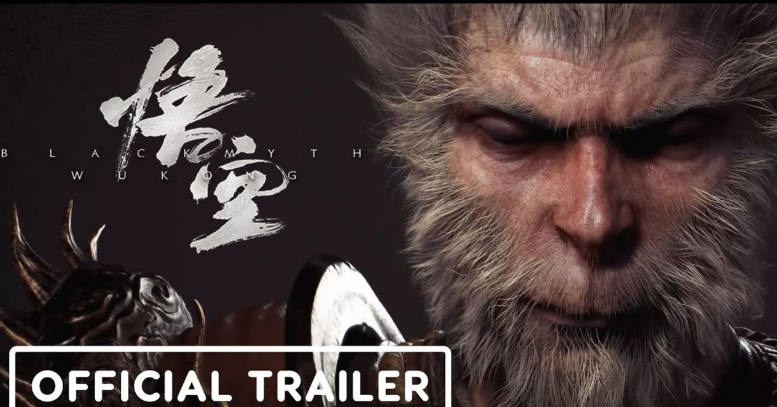
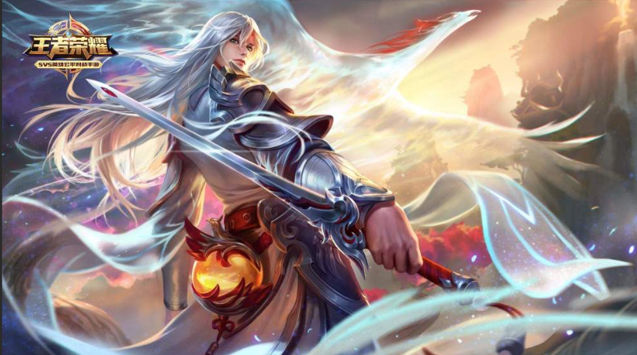
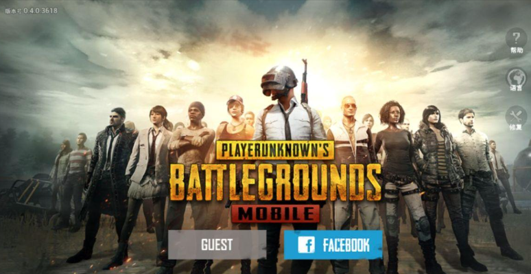

Black Myth: Wukong
|

|
Black Myth: Wukong is an action role-playing game played in single-player mode and from a
third-person perspective.The
game's progression is mostly linear, with some larger areas for the player to explore. The
player
will encounter various
monsters and bosses as enemies. The player's checkpoints are shrines around the world. The game
map
cannot be adjusted
by the player, but will change as the game progresses.
|
Honor of Kings
|

|
Honor of Kings is the most popular mobile game in China.Players can choose different heroes and
defeat their opponents
through teamwork and strategic coordination to win. There are multiple game modes in the game,
including 1V1, 3V3, 5V5
PVP battles, as well as PVE adventure mode and level-breaking mode.
|
Peace Elite
|

|
"Peace Elite" is a domestic mobile game with an anti-terrorist military competition experience
independently developed
and created by Tencent Photon Studio Group. The game was officially released for public beta on
May
8, 2019.
The game is developed using the Unreal Engine 4 and follows the gameplay of the PC game
"PlayerUnknown's Battlegrounds"
as well as the operating models of its predecessors "PlayerUnknown's Battlegrounds: Stimulating
the
Battlefield" and
"PlayerUnknown's Battlegrounds: Army Attack", focusing on the screen, map, shooting feel, etc.
The
original client game
data is restored at multiple levels, creating a highly realistic military competition experience
for
players in all
aspects.
|